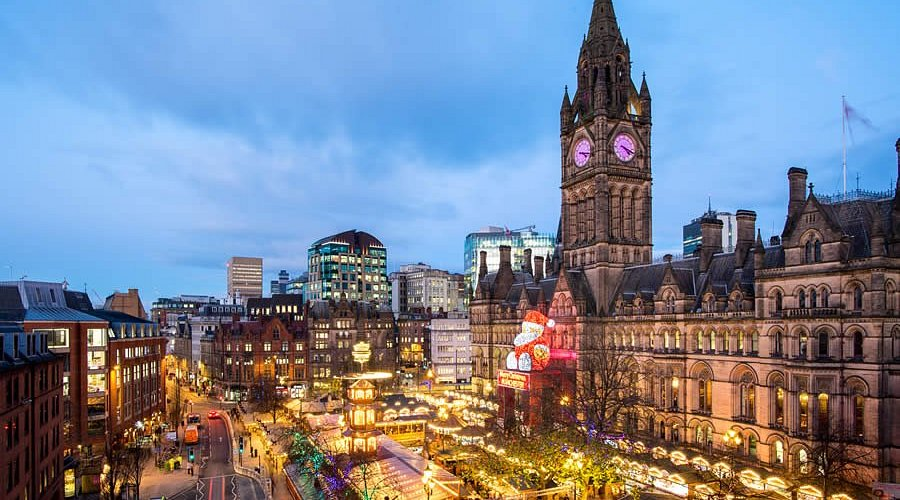

Manchester
Warszawa :::: Rzym
miasto (city) i dystrykt metropolitalny w północno-zachodniej Anglii, w hrabstwie metropolitalnym Wielki Manchester, położone nad rzekami Irwell i Mersey u podnóża Gór Pennińskich, połączony z Morzem Irlandzkim Kanałem Manchesterskim. W 2017 roku Manchester liczył 545 501 mieszkańców (6. miejsce w Wielkiej Brytanii), a jego obszar metropolitalny – Wielki Manchester (Greater Manchester), obejmujący m.in. miasta: Ashton-under-Lyne, Bolton, Stockport, Oldham, Rochdale, Wigan, Salford, Bury i Sale, liczył ponad 2,7 mln mieszkańców. Miasto jest węzłem drogowym i kolejowym, funkcjonuje tu również międzynarodowy port lotniczy Manchester. Ośrodek handlowo–bankowy, naukowy i przemysłowy w sektorze m.in. włókienniczym, maszynowym, elektrotechnicznym, chemicznym, odzieżowym i środków transportu. Ponadto ośrodek mediowy, m.in. BBC Radio Manchester.
Old Trafford

Stadion piłkarski Old Trafford w regionie Greater Manchester w Anglii. Jest to stadion domowy Manchesteru United. Z pojemnością 74 244 miejsc, która wzrosła z 74 197 na początku sezonu 2025/26, jest największym klubowym stadionem piłkarskim w Wielkiej Brytanii i jedenastym co do wielkości w Europie. Znajduje się około pół mili (800 metrów) od stadionu krykietowego Old Trafford i przyległego przystanku tramwajowego. Nazywany przez Bobby'ego Charltona „Teatrem Marzeń”, Old Trafford jest stadionem domowym United od 1910 roku, chociaż w latach 1941–1949 klub dzielił Maine Road z lokalnym rywalem Manchesterem City w wyniku zniszczeń bombowych podczas II wojny światowej. W latach 90. i 2000. Old Trafford przeszedł kilka rozbudów, w tym dobudowano dodatkowe poziomy trybun północnej, zachodniej i wschodniej, co niemal przywróciło stadionowi pierwotną pojemność 80 000 w 2006 roku, w porównaniu z około 44 000 w 1993 roku, po przekształceniu go w stadion z miejscami siedzącymi. W przypadku dalszej rozbudowy, prawdopodobnie wiązałoby się to z dobudowaniem drugiego poziomu trybuny południowej, co zwiększyłoby pojemność do około 88 000, choć w ostatnich latach pojawiły się alternatywne propozycje budowy nowego stadionu. Rekord frekwencji na stadionie padł w 1939 roku, kiedy 76 962 widzów obejrzało półfinał Pucharu Anglii pomiędzy Wolverhampton Wanderers a Grimsby Town. Old Trafford gościł finał Pucharu Anglii, dwa powtórki finałów i regularnie był wykorzystywany jako neutralny stadion do półfinałów rozgrywek. Odbywały się na nim również mecze reprezentacji Anglii, Mistrzostw Świata FIFA 1966, Mistrzostw Europy UEFA 1996, Letnich Igrzysk Olimpijskich 2012 i Mistrzostw Europy UEFA 2022. Na stadionie rozegrano również finał Ligi Mistrzów w 2003 roku. Poza meczami piłki nożnej, stadion jest okazjonalnie wykorzystywany do rozgrywek rugby league. Od 1987 roku odbywa się tu coroczny finał Super League Grand Final ligi Rugby Football League, a wcześniej finał Premiership. Ponadto, cztery razy odbywały się na nim Puchar Świata w Rugby League – w 1995, 2000, 2013 i 2021 roku (mężczyzn i kobiet).